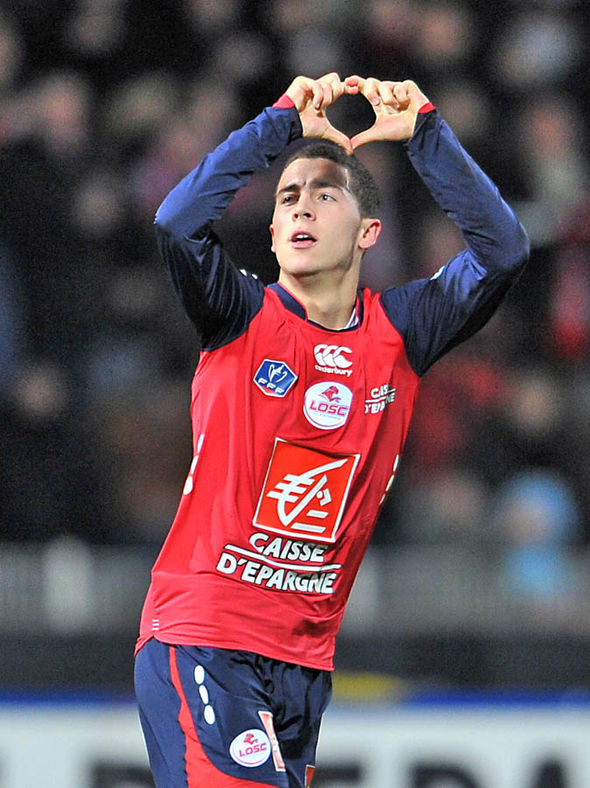
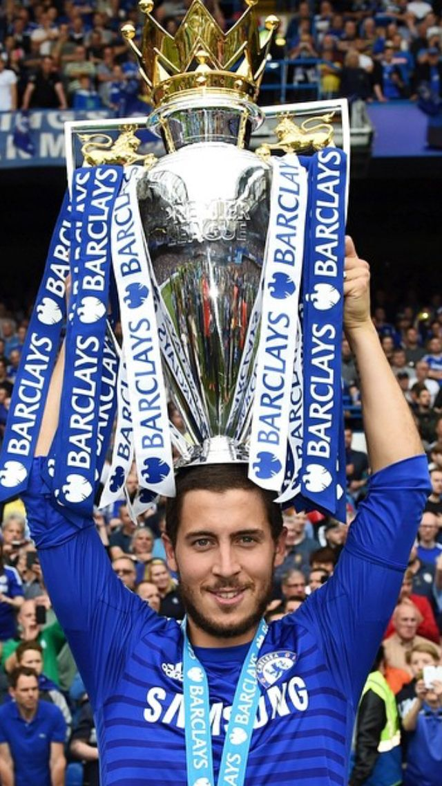
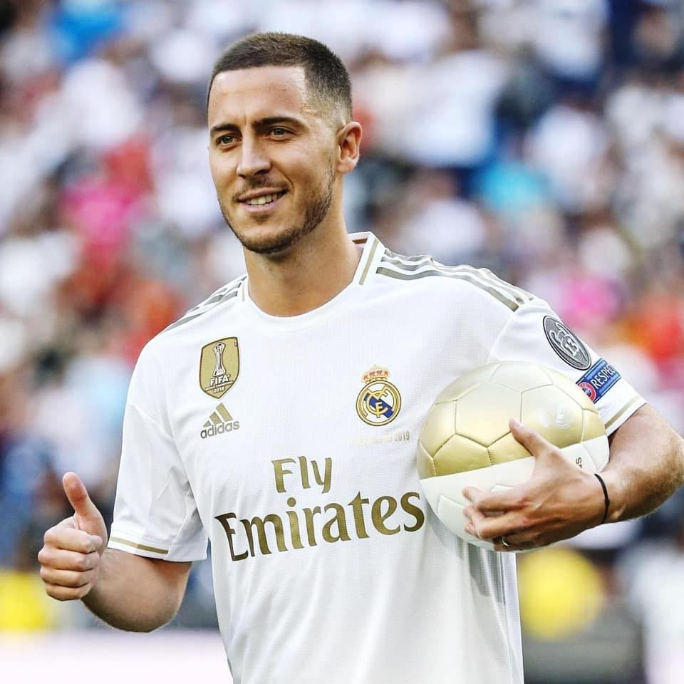

About #EH7
Eden Michael Hazard (French pronunciation: [edɛn azaʁ]; born 7 January 1991) is a Belgian professional footballer who plays as a winger or attacking midfielder for Spanish club Real Madrid and captains the Belgium national team. Known for his dribbling and passing, he is regarded as one of the best wingers of his generation. Hazard is the son of two former footballers and began his career in Belgium playing for local youth clubs. In 2005, he moved to France, where he began his senior career with Ligue 1 club Lille. Hazard spent two years in the club's academy and, at the age of 16, made his professional debut in November 2007. He became an integral part of the Lille team under manager Rudi Garcia. In his first full season, he became the first non-French player to win the Ligue 1 Young Player of the Year award, and the following season became the first player to win the award twice. In the 2010–11 season, he was a part of the Lille team that won the league and cup double and, as a result of his performances, was named the Ligue 1 Player of the Year, the youngest player to win the award. After making over 190 appearances and scoring 50 goals for Lille, Hazard signed for English club Chelsea in June 2012. He won the UEFA Europa League in his first season and the PFA Young Player of the Year in his second. In the 2014–15 season, Hazard helped Chelsea win the League Cup and Premier League, earning him the FWA Footballer of the Year and the PFA Players' Player of the Year awards. Two years later he won his second English league title as Chelsea won the 2016–17 Premier League. In 2018, he won the FA Cup, and was named in the FIFA FIFPro World XI. He won the Europa League again with Chelsea in June 2019, then joined Real Madrid in a transfer worth up to €150 million, winning La Liga during his injury-plagued debut season. Having represented his country at various youth levels, Hazard made his senior debut for the Belgium national team in November 2008, aged 17, in a friendly match against Luxembourg. Nearly three years after his debut, Hazard scored his first international goal against Kazakhstan in October 2011. He has since earned over 100 caps, and was a member of the Belgian squad which reached the quarter-finals of the 2014 FIFA World Cup and the UEFA Euro 2016. At the 2018 FIFA World Cup, he captained Belgium to third place which was their best finish in history, receiving the Silver Ball as the second-best player of the tournament.
Statistics
Note: below are displayed stats for first teams only!
- Lille
- Games: 194
- Goals: 50
- Assists: 53
- Chelsea
- Games: 352
- Goals: 110
- Assists: 92
- Real Madrid
- Games: 35
- Goals: 4
- Assists: 7
- Belgium
- Games: 106
- Goals 32
- Assists: 33
- Lille:
- 1x French Champion 2010/2011
- 1x French Cup Winner 2010/2011
- Chelsea:
- 2x English Champion 2014/15, 2016/2017
- 1x English FA Cup Champion 2017/2018
- 1x English League Cup Winner 2014/2015
- 2x Europa Leauge Winner 2012/2013, 2018/2019
- Real Madrid:
- 1x Spanish Champion 2019/2020
- 1x Spanish Super Cup Winner 2019/2020
- Belgium:
- 1x World Cup Third Place


